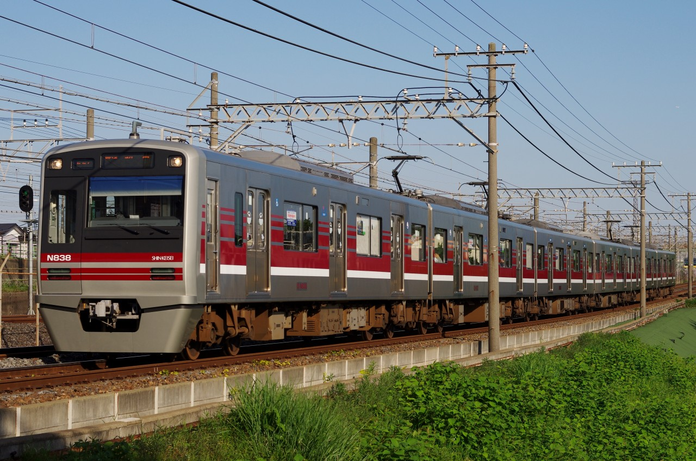
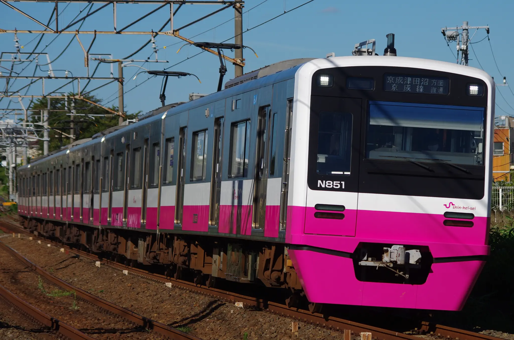
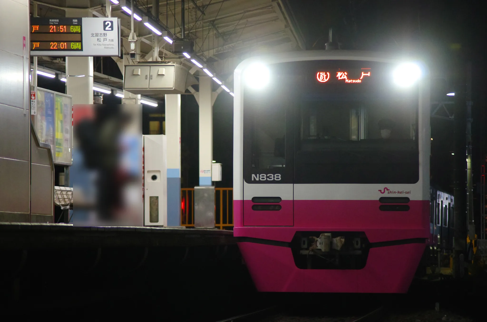

新京成電鉄N800形
2005年より導入されている。長きに渡り新京成では独自の車両を設計してきたが、京成3000形をベースとした京成グループ標準設計の車両の導入となった。2018年においても5次車の製造が行われた。 ジェントルピンクの新塗装への変更が行われ、4次車以降は新塗装を纏い落成されている。

N838編成 @みどり台-西登戸 (2013/02/16)

N838編成 @京成幕張本郷-京成津田沼 (2014/05/11)

N828編成 @京成幕張本郷-京成津田沼 (2014/05/11)

N848編成 @北初富 (2019/12/03)
高架化された北初富駅に入線する新塗装車。余談となるが、移設前の旧ホームはこの付近にあった。

N858編成 @薬園台-前原 (2023/09/01)

N838編成 @薬園台 (2023/11/17)